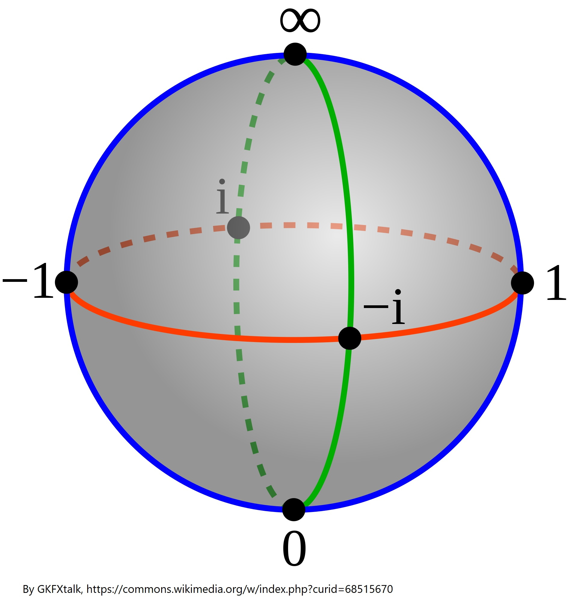

In the real numbers there are two "types" of infinity - a positive one and a negative one. In the complex plane, instead of defining an infinity in every direction (which would be cumbersome), we say there is only one infinity and you will get to it no matter in which direction you go.
This lends itself to a notion, that complex numbers can be thought of as situaded on a sphere, called the Riemann sphere. Notice a very important fact: a point "spinning" around infinity will be also "spinning" around 0. Moreover, a point traveling along a path enclosing both zero and infinity is at the same time traveling along a path, which has no zero or infinity inside (if you look at the "other slice" of the sphere). This is one of the main problems with the solving algorithm used in this program.